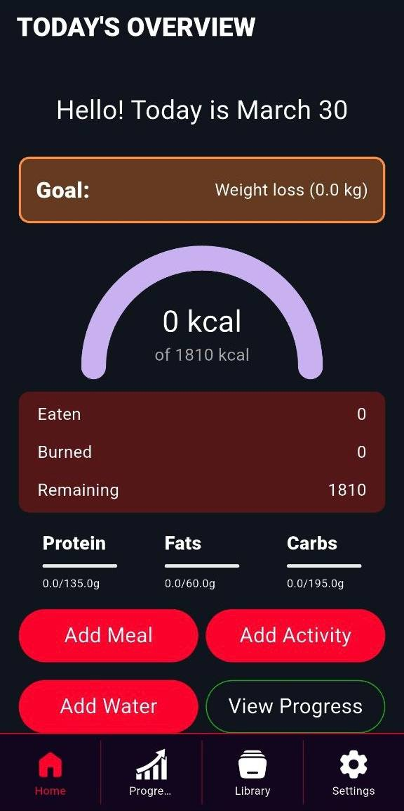
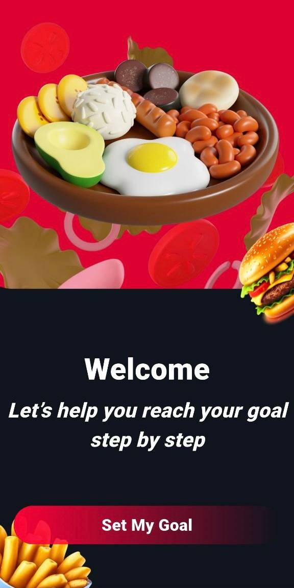
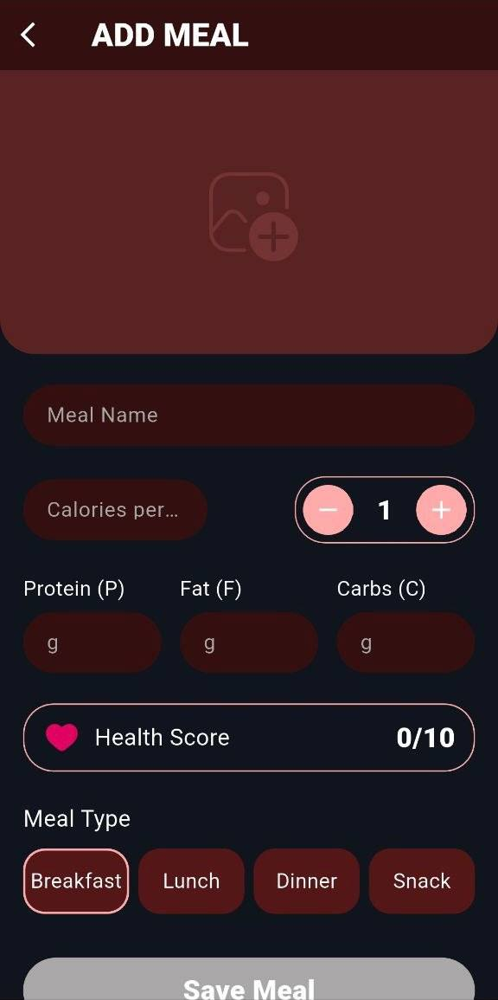
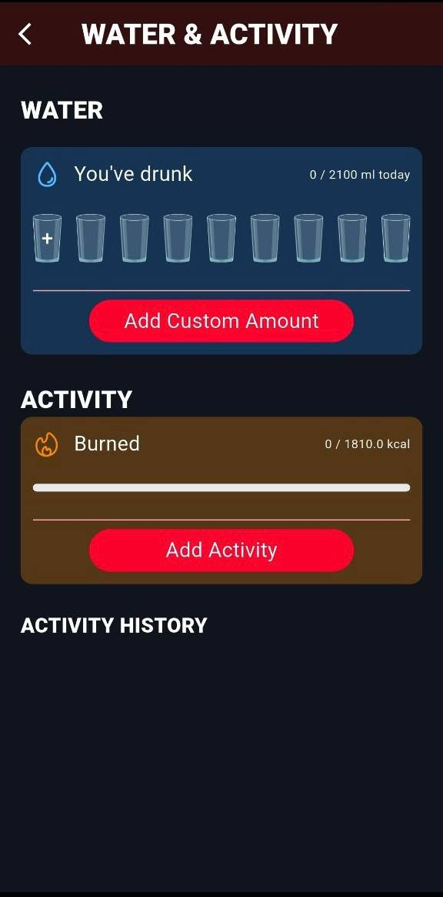
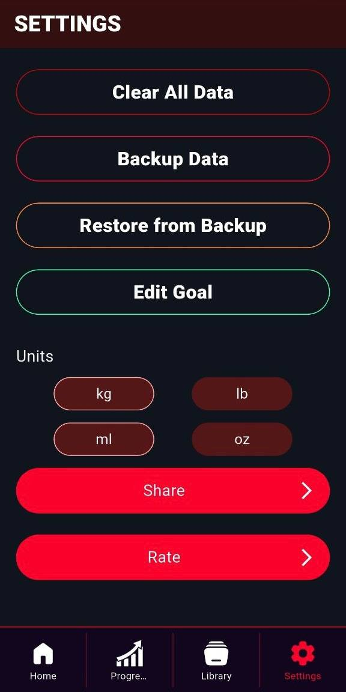
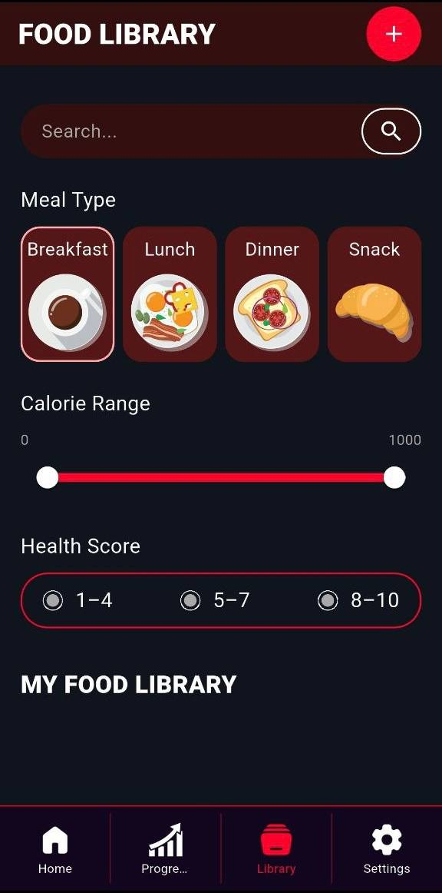

Build your routine, track your intake, and move closer to your goal every day
Beking My Goal is a nutrition-focused mobile experience for users who want one place to manage daily calorie targets, meal input, hydration, activity, food discovery, and progress structure without jumping between separate tools.



Goal-first onboarding
The app starts from motivation, then moves directly into everyday tracking.
Daily decision support
Meals, water, activity, and food search live inside the same routine system.
Beking My Goal is designed like a personal nutrition dashboard: clear, structured, and focused on daily momentum instead of clutter
Feature set
Main parts of the product
Goal-based start screen
The opening flow introduces the product as a focused assistant for nutritional planning and consistent habit building.
Daily overview
Users can immediately see calories, remaining budget, macro split, and quick access actions for everyday routine tracking.
Meal input
The app includes a dedicated add-meal flow with calories, proteins, fats, carbs, meal type, and health score fields.
Water and activity tracking
Hydration and energy burn are treated as active daily metrics, not afterthoughts.
Food library and filtering
Users can browse meals by category, search entries, and filter by calorie range and health score.
Settings and control
Backup, restore, goal editing, units, rating, and sharing remain grouped inside a dedicated settings zone.
App flow
From motivation to everyday nutrition control
Welcome entry
The first impression is motivational and brand-driven.
Daily overview
Users get immediate visibility into the current day.
Meal entry
Input is split into understandable nutrition fields.
Water & activity
Health behavior stays broader than food only.
Food discovery
Users can explore options instead of entering everything manually.
Settings layer
The app ends with practical controls and system preferences.
Current focus
Start with a clear entry point
The intro screen frames the app as a guided health product that helps users move toward a defined result step by step.
Screen structure
Visual showcase
Brand opening with product promise
The hero screen presents the health concept first, then pushes the user into a simple goal-oriented journey.
Daily tracking dashboard
The overview page concentrates calories, macros, intake actions, and progress entry points in one place.
Meal creation workflow
Nutritional input is structured through meal name, quantity, macro values, meal type, and score.

Hydration and activity screen
Water intake and burned activity are grouped together for a clearer daily behavior view.

Filtered food library
Search, meal-type browsing, calorie range, and health score filters give the app a more organized nutrition reference layer.
Settings and app utilities
Data controls, units, backup, restore, sharing, and goal editing remain easy to reach from the final settings section.

Experience
What this product structure communicates
★★★★★
“It feels like a proper nutrition routine app because meals, water, activity, and food discovery all support the same goal.”
★★★★★
“The daily overview screen is the strongest part because it makes calories, macros, and actions immediately readable.”
★★★★★
“The food library and settings screens make the app feel complete, not like a one-page tracker.”
Get the app
Use Beking My Goal to organize meals, hydration, activity, and daily nutrition decisions in one flow
The app combines goal motivation, nutrition entry, macro structure, water tracking, activity logging, food library browsing, and practical settings into one health routine system.